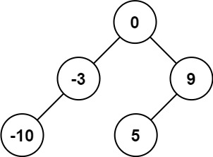
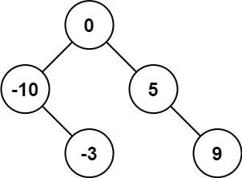
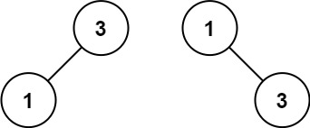

108. 将有序数组转换为二叉搜索树
本页目录
| 题目信息 | 内容 |
|---|---|
| 难度 | 简单 |
| 核心模式 | 分治取中点 |
| 时间复杂度 | O(n) |
| 空间复杂度 | O(log n) |
题目与约束
给你一个整数数组 nums ，其中元素已经按 升序 排列，请你将其转换为一棵 平衡 二叉搜索树。
示例 1：

输入：nums = [-10,-3,0,5,9]
输出：[0,-3,9,-10,null,5]
解释：[0,-10,5,null,-3,null,9] 也将被视为正确答案：

示例 2：

输入：nums = [1,3]
输出：[3,1]
解释：[1,null,3] 和 [3,1] 都是高度平衡二叉搜索树。
提示：
1 <= nums.length <= 104-104 <= nums[i] <= 104nums按 严格递增 顺序排列
核心不变量
中点作根可同时保证 BST 有序与高度平衡。
完整推导
思路推导
-
直觉与痛点（随便建树的恶果）：
既然是有序数组，我能不能直接把第一个元素当根节点，第二个元素当右孩子，第三个当右孩子的右孩子……？
痛点：能建出 BST，但这棵树会长成一根“糖葫芦”（严重向右倾斜的链表）。题目要求必须是高度平衡的！如果树不平衡，查找效率就会从 O(log N) 退化成 O(N)，毫无意义。
-
破局思路（找天平的支点：中位数）：
怎样才能让天平（树）两边平衡？必须把最中间、最重量级的人（中位数）拎起来当老大（根节点）！
因为数组已经排好序了，中位数左边的数字一定比它小（天然适合做左子树），中位数右边的数字一定比它大（天然适合做右子树），而且两边的人数基本相等（保证了高度平衡）。
-
逻辑推演（递归分治）：
-
第一步（定规矩）：在一个区间
[left, right]内，找到中间位置mid = left + (right - left) / 2。 -
第二步（封王）：把
nums[mid]这个数字提拔为当前的根节点root。 -
第三步（分封诸侯）：
让左边的地盘
[left, mid - 1]自己去建一棵左子树，建好后接在我的root.left上。让右边的地盘
[mid + 1, right]自己去建一棵右子树，建好后接在我的root.right上。- 第四步（终止条件）：如果地盘被分光了（
left > right），说明没数字可建了，返回null。
Java 实现（极简递归版）
-
/**
* Definition for a binary tree node.
* public class TreeNode {
* int val;
* TreeNode left;
* TreeNode right;
* TreeNode() {}
* TreeNode(int val) { this.val = val; }
* TreeNode(int val, TreeNode left, TreeNode right) {
* this.val = val;
* this.left = left;
* this.right = right;
* }
* }
*/
class Solution {
public TreeNode sortedArrayToBST(int[] nums) {
// 防御性编程
if (nums == null || nums.length == 0) {
return null;
}
// 把整个数组的范围 [0, nums.length - 1] 交给辅助函数去建树
return buildTree(nums, 0, nums.length - 1);
}
// 辅助函数：在 nums 数组的 [left, right] 闭区间内，构造平衡 BST 并返回根节点
private TreeNode buildTree(int[] nums, int left, int right) {
// 1. 递归终止条件：区间无效，说明没有任何数字可以用来建树了
if (left > right) {
return null;
}
// 2. 找中点，作为当前的根节点
// 这里使用 left + (right - left) / 2 是为了防止 (left + right) 数值过大导致 int 溢出
int mid = left + (right - left) / 2;
TreeNode root = new TreeNode(nums[mid]);
// 3. 递归构造左子树，范围是当前中点的左边半段
root.left = buildTree(nums, left, mid - 1);
// 4. 递归构造右子树，范围是当前中点的右边半段
root.right = buildTree(nums, mid + 1, right);
// 5. 返回这座“天平”的支点
return root;
}
}
复杂度
- 时间复杂度：O(N)。每次选取中点花费 O(1) 的时间，总共 N 个数字，每个数字都会被访问一次并创建为一个节点。
- 空间复杂度：O(log N)。因为这是一棵高度平衡的二叉树，所以递归深度最大也就是树的高度 log N。每次递归调用只使用了常数级别的额外空间。
易错点与扩展（面试细节大考问）
- 踩坑警告：中点偏左还是偏右？
- 如果数组长度是偶数（比如
[1, 2, 3, 4]），中点有两个（2和3），该选哪一个？ - 我们代码里写的left + (right - left) / 2在向下取整后，会永远选择偏左的那个（即2）。 - 面试官灵魂追问：“如果我让你每次选偏右的那个做根节点，你会怎么改代码？” - 满分抢答：只需要改一行！把求mid的公式改成int mid = left + (right - left + 1) / 2;，这样遇到偶数个数时，就会强行拿到偏右的那个数字。建出来的依然是完美的平衡二叉树，只是形状会有细微的不同（树向左边倾斜一点点而不是向右倾斜）。 - 面试炫技：“你能不用递归（也就是用迭代/BFS）写出这道题吗？”
- 降维解法：可以用三个队列！一个队列存准备要建立的节点，一个队列存该节点对应的
left边界，一个队列存对应的right边界。每次从三个队列里拿出一组数据，算中点赋值，然后把它的左右边界范围再塞回队列里。虽然代码极长且没人会在生产环境这么写，但能说出这个思路，绝对证明你把 BFS 玩透了！
📝 算法避坑笔记：从“线性思维”到“树形思维”的跨越
—— 以「108. 将有序数组转换为二叉搜索树」为例
❌ 一、 典型错误复盘：为什么 for 循环行不通？
- 错误做法：找到数组中点作为根节点后，直接用一个
for循环，把左边的数字依次挂在左下角，右边的数字依次挂在右下角。 - 错误后果：建出了一棵形状像“人”字的树（左右两边全是单直线的链表），严重违反了题目“高度平衡”的要求。
- 致错根源（两大幻觉）：
1. 被“小数据”视觉欺骗：力扣示例给的数组只有 5 个节点，左半边只有 2 个节点。2 个节点无论怎么建都是一条直线，这造成了“可以用
for循环串起来”的严重错觉。 2. 用“一维线性工具”解“二维分岔问题”：for循环是线性推进的，而二叉树是向外辐射的分形结构。
✅ 二、 破局核心：正确的“树形思维”
- 分形与分治（Divide and Conquer）：
树的局部和整体长得一模一样。既然大数组需要找中点当老大，那么切分出来的小数组也必须自己找中点当小老大，绝不能草率排队。
- 递归的“甩手掌柜”心法：
不要试图在脑子里走完树的所有分支。只要做好当前节点该做的事，剩下的直接“外包”：
“我把中点挑出来当根节点。剩下的左半边？直接扔给递归函数，让它给我返回建好的左子树就行，我不关心细节！”
🚀 三、 算法实战“肌肉记忆”（三大铁律）
- 遇树先想“递归”：
除层序遍历（BFS）必须用队列外，90% 的二叉树问题（求深、翻转、对称、建树），第一直觉必须是递归。如果在树的题里写了 for/while 去构建结构，立刻拉响警报。
- 脑内推演，节点数必须 ≥ 7：
永远不要用 3 个或 5 个节点的极小数据去推演规律，极小数据必然呈现退化形态。脑补测试用例时，至少用 7 个节点（3层高度）的满二叉树，才能看清真实的逻辑走向。
- 找准中点防溢出：
求中位数的标准写法永远是 int mid = left + (right - left) / 2;，避免 (left + right) 导致整型溢出。